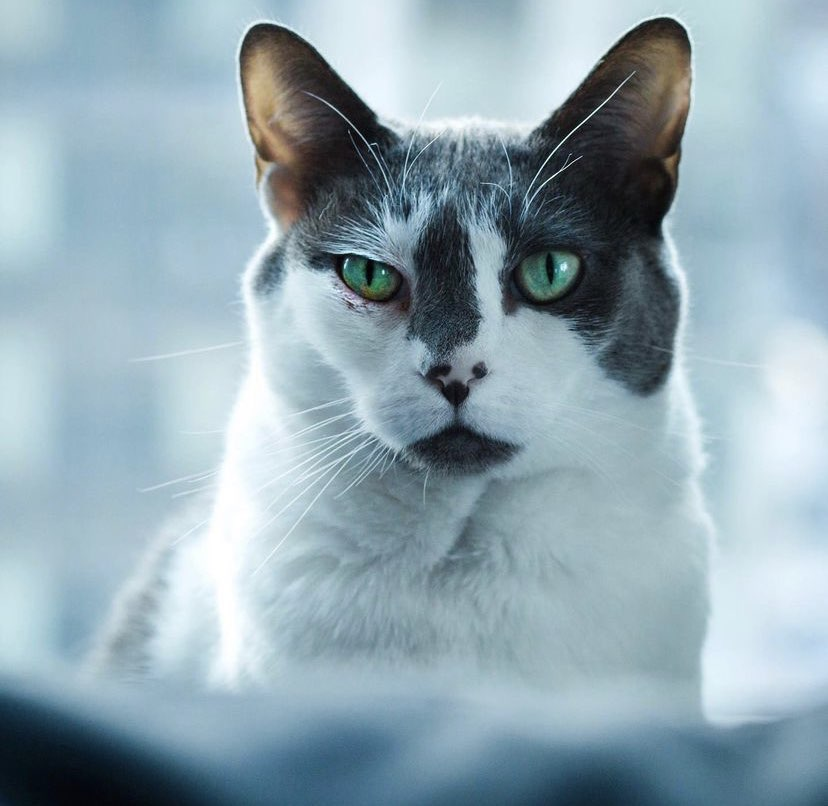

Mike has experience as the first technical employee, Lead Developer and Director of Engineering, and Director of New Products and former Technical Advisor at the web advertising analytics company Moat. Moat raised over $67 million in VC funding, and was acquired for $850 million by Oracle in 2017.
Granted several patents in conjunction with his work with Moat including System and method for dynamically controlling sample rates and data flow in a networked measurement system by dynamic determination of statistical significance.
In addition to managing the technology operations at Torch, Mike manages the online web development and design communities on reddit /r/webdev and /r/web_design which is responsible for over 500,000 people in each community for learning and teaching about web technologies.
Ethereum developer and co-author of the EIP-918: Mineable Token Standard which provides a specification for a standardized Mineable Token that uses a Proof of Work algorithm for distribution.
CTO of Zero, a non-profit building pandemic response tools to keep communities safe that was started in April 2020.
B.S. and M.Eng. from Cornell University.
Jackson
In high school
Favorite color is blue
Has a cat named Rapha 
Jackson may not be 12 but he is 17 which makes him enough of a kid where making this project seems impressive